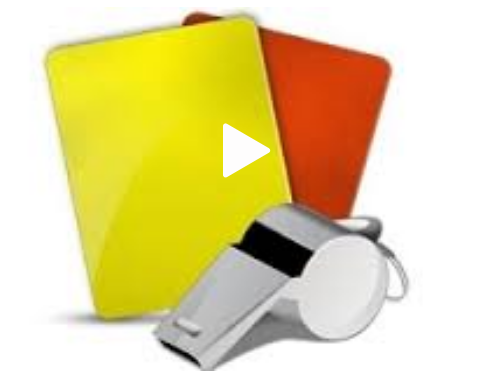

"Una Parte del Arbitraje en Colombia"
Es para nosotros un verdadero placer darte la bienvenida a nuestro espacio en la Web, en el que queremos que se mantenga informado, que pueda conocernos y ser parte de nuestra corporacion.
La Academia Colombiana de Arbitraje, fue constituida el día 26 de julio de 2006, bajo la figura jurídica de ENTIDAD SIN ÁNIMO DE LUCRO, registrada ante la Cámara de Comercio de Bogotá bajo el registro No. 500865. Ante la Dirección de Impuestos Nacionales DIAN bajo el Nit No. 900.098.924-6 y con código de actividad No. 9241, que permite la ejecución de actividades de juzgamiento, instrucción y enseñanza informal.